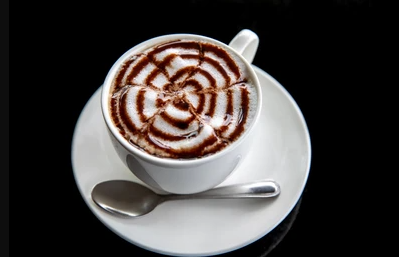

MOCHA COFFEE

* Mocha Coffee is a beloved beverage known for its ability to fine-tune your focus and boost your energy levels.
* In fact, many people depend on their daily cup of joe right when they wake up to get their day started on the right foot.
*In addition to its energizing effects, coffee has been linked to a long list of potential health benefits, giving you all the more reason to get brewing.
BENEFITS
1. Boosts energy levels.
2. May be linked to a lower risk of type 2 diabetes.
3. Could support brain health.
4. May promote weight management.
5. Linked to a lower risk of depression.